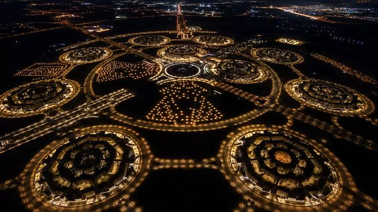
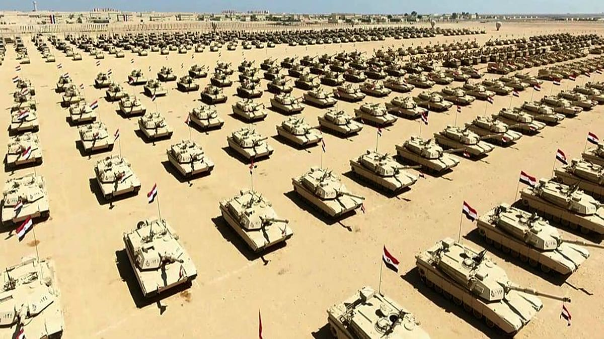
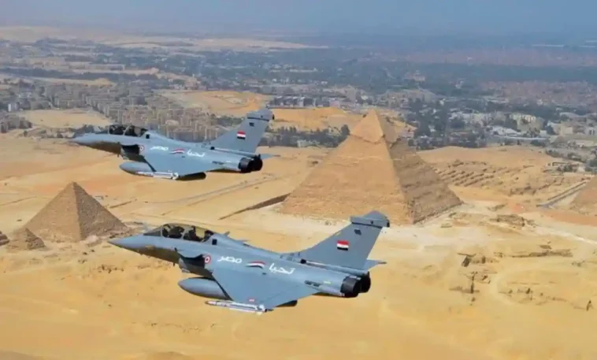
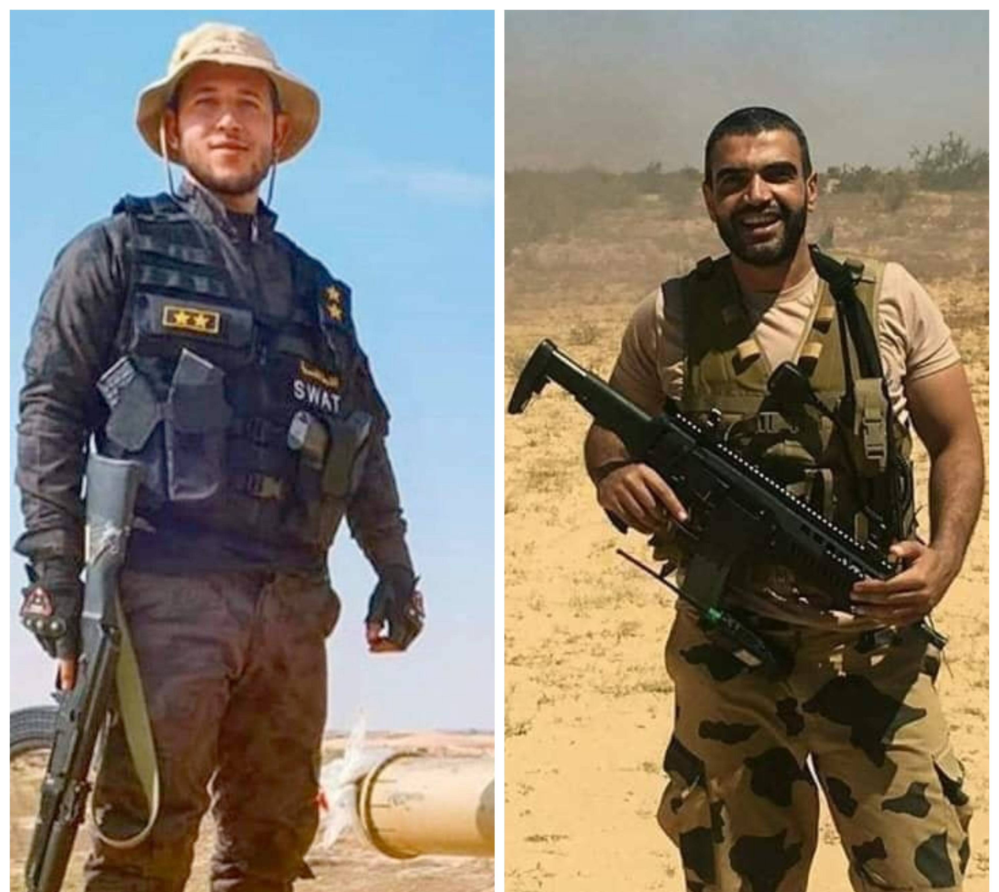
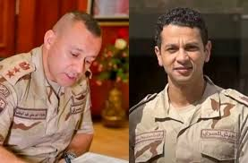

الدولة أولاً
لا مدرسة ولا مصنع ولا مستشفى بلا دولة ومؤسسات قائمة وحدود آمنة. حين تضعف الدولة يتوقف التعليم والاستثمار وتضيع الأرواح. لذلك يأتي حفظ الدولة قبل بنائها، والترتيب هو: أمن، ثم مؤسسات، ثم تعليم، ثم اقتصاد.


جيش عمره آلاف السنين
ارتبطت حماية الدولة في مصر بجيشها منذ فجر التاريخ، ومن أبرز المحطات:
- نحو 1550 ق.م: أحمس الأول يطرد الهكسوس ويوحّد البلاد.
- نحو 1457 ق.م: تحتمس الثالث ينتصر في معركة مجدو.
- نحو 1274 ق.م: رمسيس الثاني في معركة قادش.
- 6 أكتوبر 1973: عبور قناة السويس بعد تخطيط دقيق وخداع استراتيجي.

2011 و2013: اختبار الدولة
بعد أحداث 2011 و2013 مرّت الدولة بمرحلة اضطراب أمني ومؤسسي أثّرت في مؤسساتها، وتصاعدت هجمات الجماعات الإرهابية، خاصة في شمال سيناء. وفي تلك الفترة ظهر معنى الجيش كحصن أخير يحفظ تماسك الدولة وحدودها حتى تعود المؤسسات إلى العمل.
الحرب على الإرهاب وسيناء 2018
خاضت القوات المسلحة والشرطة حرباً طويلة على الإرهاب، توّجت بإطلاق العملية الشاملة سيناء 2018 في 9 فبراير 2018.
وفي هذه الحرب ظهر أبطال ضحّوا من أجل مصر، منهم الشهيد المقدم أحمد المنسي قائد كتيبة الصاعقة 103 الذي استشهد عام 2017، والشهيد عمر القاضي ورجالهما، وغيرهم كثيرون لا تتسع الصفحة لأسمائهم.

الاستقرار واجب وطني وديني
من مقاصد الشريعة حفظ النفس والأمن، فاستقرار الدولة ليس واجباً وطنياً فقط بل هو واجب ديني أيضاً. وهذه نصوص من القرآن والصحيحين تدل على قيمة الأمن والإعداد للدفاع وحراسة الثغور.
من القرآن الكريم
وَقَالَ ادْخُلُوا مِصْرَ إِن شَاءَ اللَّهُ آمِنِينَسورة يوسف، الآية 99: ذُكرت مصر مقترنة بالأمن.
وَأَعِدُّوا لَهُم مَّا اسْتَطَعْتُم مِّن قُوَّةٍ وَمِن رِّبَاطِ الْخَيْلِسورة الأنفال، الآية 60: الأمر بإعداد القوة.
مَن قَتَلَ نَفْسًا بِغَيْرِ نَفْسٍ أَوْ فَسَادٍ فِي الْأَرْضِ فَكَأَنَّمَا قَتَلَ النَّاسَ جَمِيعًاسورة المائدة، الآية 32: حرمة الدم وخطر الإفساد في الأرض.
وَلَا تَحْسَبَنَّ الَّذِينَ قُتِلُوا فِي سَبِيلِ اللَّهِ أَمْوَاتًا بَلْ أَحْيَاءٌ عِندَ رَبِّهِمْ يُرْزَقُونَسورة آل عمران، الآية 169: مكانة الشهداء.
من الصحيحين
رِبَاطُ يَوْمٍ فِي سَبِيلِ اللَّهِ خَيْرٌ مِنَ الدُّنْيَا وَمَا عَلَيْهَارواه البخاري: فضل حراسة الثغور.
رِبَاطُ يَوْمٍ وَلَيْلَةٍ خَيْرٌ مِنْ صِيَامِ شَهْرٍ وَقِيَامِهِرواه مسلم: فضل الرباط والحراسة.
مَنْ حَمَلَ عَلَيْنَا السِّلَاحَ فَلَيْسَ مِنَّامتفق عليه (البخاري ومسلم): التحذير من حمل السلاح على المجتمع.
فَإِذَا فَتَحْتُمُوهَا فَأَحْسِنُوا إِلَى أَهْلِهَا، فَإِنَّ لَهُمْ ذِمَّةً وَرَحِمًارواه مسلم: وصية النبي ﷺ بأهل مصر.
هذه نصوص عامة عن قيمة الأمن والدفاع، وللفتوى في المسائل التفصيلية يُرجع إلى الأزهر الشريف ودار الإفتاء.
المنطقة الجنوبية 2026: «درع الجنوب»
في نوفمبر 2026 أعلن المتحدث العسكري حملة لمواجهة التنقيب غير المشروع عن الذهب في مناطق الصحراء الشرقية والمنطقة الجنوبية، بعد توجيه رسائل تحذيرية للمتواجدين. ووفق البيان، شكّلت عناصر الدهابة المسلحة تهديداً للعاملين في قطاع التعدين وللاستثمار، وهدفت الحملة إلى فرض السيادة المصرية على كامل الأراضي.
وخلال العمليات تبادلت القوات إطلاق النار مع العناصر المخالفة، فاستشهد العقيد أركان حرب أحمد سمير، رئيس أركان حرس حدود المنطقة الجنوبية، والمقدم أركان حرب أحمد جودة، رئيس عمليات كتيبة حرس حدود بالمنطقة الجنوبية العسكرية. ونعاهما شيخ الأزهر د. أحمد الطيب. رحمهما الله.

المواطن شريك في حماية الدولة
بعد الله، لولا الجيش ما كان للبلد وجود. وعلينا نحن أيضاً الحفاظ على البلد من الداخل: بالوعي بالشائعات، واحترام القانون، والتعليم والعمل، والتعاون مع الأجهزة المختصة، لأن ما يُحاك لمصر من مؤامرات وحروب خارجية خطر على الدولة. لذلك علينا جميعاً حماية مصر، ومن بعد ذلك يبدأ البناء.